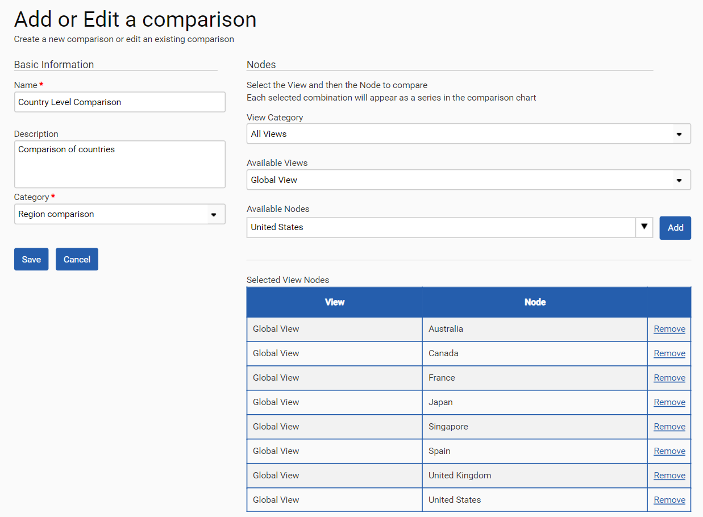
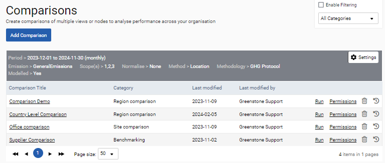
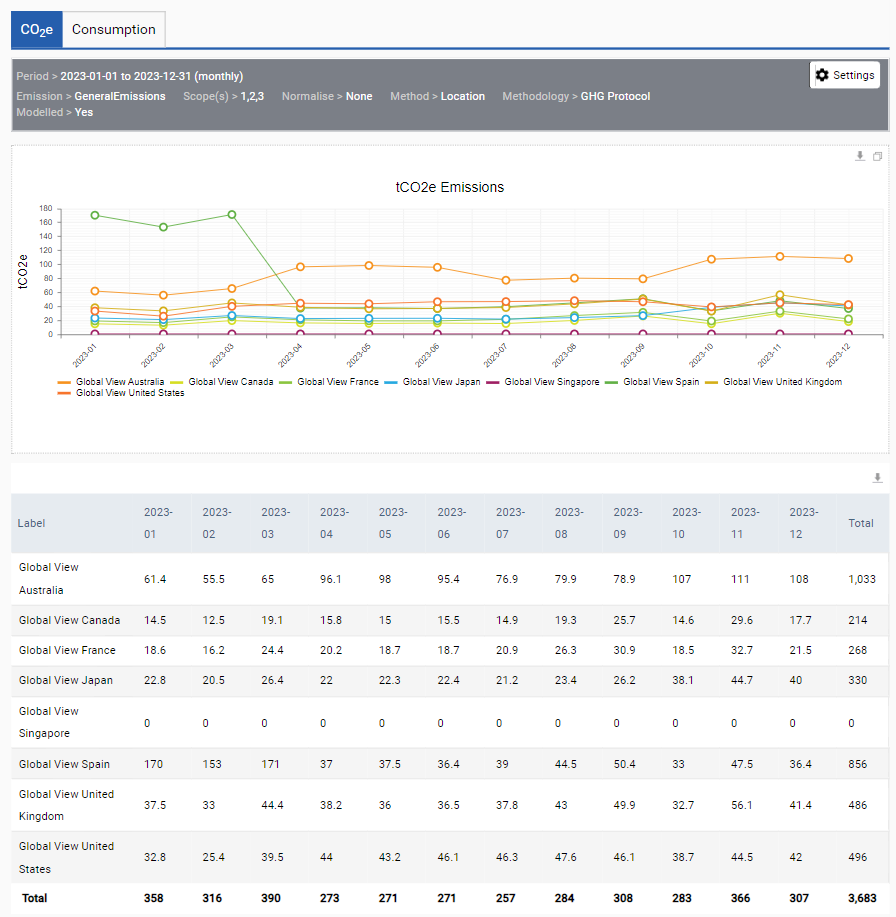
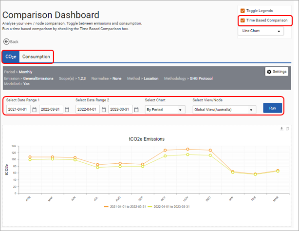
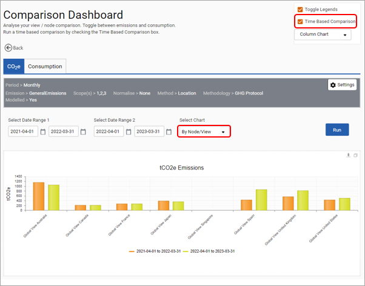

The comparisons dashboard can be used to compare the performance of multiple nodes, or views.
Before comparisons can be set up and used, a ‘Comparison Category’ will need to be created. It is possible to set up multiple categories which can be used to group comparisons and each comparison will need to be assigned to a category. To create a ‘Comparison Category’, click ‘Admin Settings > Category Management > Comparisons’. Add a category by selectin ‘Add Category’.
To create a comparison, navigate to ‘Dashboards > Comparisons > View/Node’ and select ‘Add Comparison’. Provide your comparison with a name and description and categorize it. Users should then select the view and nodes they would like to compare. Select ‘Add’ to include the node in your comparison.

When the comparison has been set up then click Run next to the comparison to run this. Please use the ‘Settings’ control to set the required emissions, time period or consumption units.

When a comparison is run the result is shown in both a graph and corresponding table. The graph can be displayed as a bar graph shown below or as a line graph. Both the graph and table can be exported for further analysis.

Time based comparisons enable two time periods to be compared. Once a comparison has been run, select the ‘Time Based Comparison’ option to launch this screen. Set the date ranges to be compared.
The ‘By Period’ option allows the comparison of two equal time periods by the breakdown period selected in ‘Change Settings’ i.e. monthly, quarterly for any of the nodes or views in the comparison.

The ‘By Node/View’ option allows the comparison of the totals for the selected time periods for all nodes or views in the comparison.

The time-based comparison can also be used to compare consumption. However, for this option it is essential that the data source and units have been selected in ‘Settings’. For example, you may wish to use kWh to run comparisons on electricity consumption.